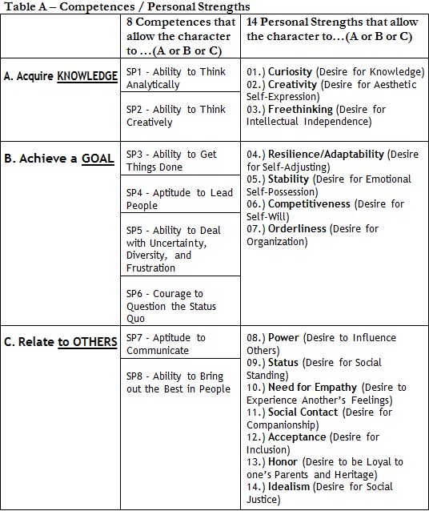

You’ve already mentioned that. The emphasis of the evaluation is on the comprehension of how the applicant acts upon the world. It is a quite behavioral approach, isn’t it?


Yes, the AdCom members want, ultimately, to understand whether you are competent enough to follow an inspiring professional journey at the end of the MBA program. We have discussed the Top 8 Post-MBA Inspiring Careers, remember?

I understand that the approach is pragmatic and objective, just like the Americans.
That is right. There is no room or time for daydreaming during the process.
I get it. Essentially, I must know how to explain the HOW’s/WHAT’s of my actions upon the world. Now, between you and me, how about the WHY’s?! I know that Stanford, for instance, will allow some “la la land” (“viajadas”). As a matter of fact, its classical essay 1, “What matters most to you, and why?” often gives applicant some headache.
Have you noticed the “WHY?” at the very end of the question?
I assume that the main idea here is actually to put this WHY into the context of our lives.
I would say that’s where the main difficulty lies. Observe, Nicholas, that so far at the Megaron Marathon you have been concerned about revealing the WHAT’s (DESIRE), but, I agree, you must reveal the WHY’s (MOTIVATIONS). Well, now that you’re saying, Km 15 serves this purpose. We will talk about the so-called PERSONAL VALUES.
PERSONAL VALUES?! Hum, I can anticipate the difficulty.
The first thing to bear in mind is that the process of gaining insights into your personal life is part of a lifelong project. Now, in June, if you do this exercise, you most certainly will get a story that you could change if you did the exercise again within four months, in November, during the period of interviews.
I get the idea: facts about the past cannot be changed, but interpretations of these same facts can.
Exactly. The timeline in the Megaron Marathon follows this purpose: stimulate the constant questioning of your values.
As George Eliot said, “no story is the same to us after a lapse of time; or rather, we who read it are no longer the same interpreters.”
Exactly, we are reexamining our past with highly diverse eyes, minds, and hearts.
Again: the power of a good STORY, huh?
Yeah! Getting knowledge of how your PERSONAL VALUES will impact the way you understand the world and make decisions.
Wow. It is quite an ambitious exercise. So I must understand my PERSONAL VALUES and their impact on my actions.
I witness that every single year. Lots of students provide feedback on how the Megaron Marathon enabled them to connect personal with professional values.
Megaron, maybe I am not on par with this task. For me, it is difficult to identify and assess PERSONAL VALUES, and it is even more difficult to connect them with my professional choices.
Take it easy. That’s a challenge every applicant will face through the Marathon.
But again: why is connecting personal to professional values so important?
We do not want robot applicants. Robots execute tasks perfectly, but they do not know WHY.
I see. Again: I should worry not just about the HOW’s but mainly about the WHY’s.
There must be a connection between your personal history and your choices. Admissions officers want to know the man (or woman) behind the leader.
Oh, well, that is tough.
I’d say it is a classic mistake to write essays as if you wrote a résumé or filled out a data form. When you write an essay, you should seek your motivations and bring the WHY’s to surface. Résumés and data forms list facts to be analyzed, but there are only WHAT and not WHY. There is no SYNTHESIS, just ANALYSES; a connection is missing between the various parts.
All of that reminds me of movies based on comics. You know, I am not a fan of comics, but I like the movies that explain WHY superheroes are WHAT they are.
What do you mean?
I saw all the Batman movies, but by far, the one I liked the most is “Batman Begins.”
This movie is about the hero’s origins.
That’s right.
It shows the murder of his parents during a crime and Bruce, still as a boy, hiding in a hole in the ground. This kid leaves that hole swearing vengeance. And he chooses the bat as his symbol. He is an interesting character. He lives a dilemma, not knowing whether he seeks justice or vengeance.
That is why he is called the Dark Knight. He lives in the dark…
These STORIES that explain the WHY’s in the lives of heroes are called Origin Stories (or “Backstories”).
From what I have understood, I must select some events of my personal, private life.
Yes, an Origin Story like Batman’s.
I must show some STORY that can serve as evidence to defend what I do well, right?
From the vast number of life STORIES you must make choices. Yes, look for STORIES of yours that are filled with values, interests, and lessons that have produced your world perspective.
So it is a STORY that should NOT focus on what I have done or accomplished in the past, right?
Exactly.
Any tips to approach this exercise?
Through the years, advising hundreds of applicants, I have a good idea of what kind of personal STORIES work for each of the profiles. Observe the table A below:

Interesting. Have you related Competence to Personal Values?
I have. As an example, the Hero who has the Superpowers that help him “Acquire Knowledge”, in this case, SP-1 and SP-2, often reveals that his MOTIVATIONS are connected with the first 3 Personal Strengths: “01.) Curiosity (Desire for Knowledge); 02.) Creativity (Desire for Aesthetic Self-Expression); 03.) Freethinking (Desire for Intellectual Independence).”
I am not sure I get it.
Again: on the previous Km which Superpowers did you excel at?
Do you mean on the Km that discussed “What Do I Do Well?”
Yes, in your opinion, what are your best STORIES?
I am not sure, but I think I have mastered SP2, SP5 and SP6.
Check Table A: your SP’s are “Competences that allow the character to Acquire KNOWLEDGE / Achieve a GOAL.” Try to pick your “Personal Strengths” from the 1-9 group.
A bit complicated, I would say.
Read the testimonial of the 4 Heroes. Observe how they did their exercise.
Did you not say 3 STORIES? Why only 2 (TWO) personal strengths?
I believe it is enough to mention two MOTIVATIONS to explain the WHY’s of your actions.
Bottom line: you want at this point of the Marathon is that I choose two main personal characteristics and find PERSONAL STORIES to offer evidence supporting that I actually possess such Competences.
Precisely. You could not have defined it better.
Ok. I think that after writing tons of essays I already have a great idea of what is worth telling in the essays. I just don’t know if I will easily look back and just pick two personal events to support my thesis.
Get it a try. Roll up your sleeves and get to work. As you’ve done in every Km, now you must go to Action Plan Km 15. There I will explain how I will evaluate your text. Thank you for your effort.
Wish me luck.
Good luck. Nicholas, we’ve finished discussing an important element in the understanding of your values. Keep Running.